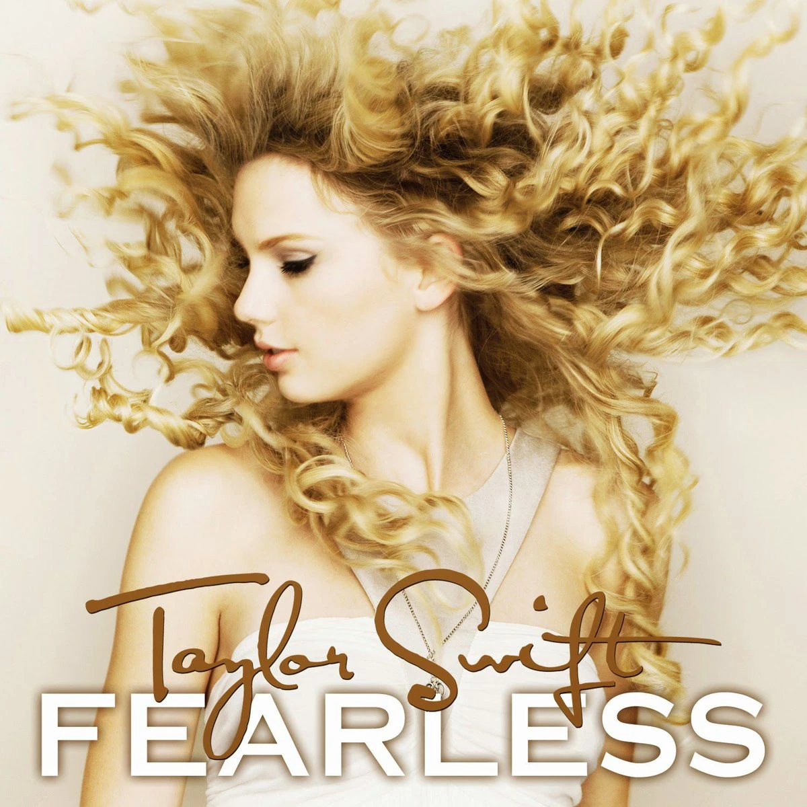

Fearless

Fearless es el segundo álbum de estudio de la cantante y compositora estadounidense Taylor Swift, fue lanzado el 11 de noviembre de 2008 por el sello discográfico Big Machine Records.
Musicalmente Fearless es un álbum de country pop cuya composición incorpora instrumentos asociados al country como banjos, violines, mandolinas y guitarras acústicas, que se entrelazan con guitarras eléctricas y cuerdas dinámicas. Los críticos musicales encontraron que el álbum presentaba un atractivo crossover aportado por las influencias de diferentes estilos de pop, folk y rock. Inspirada en los sentimientos adolescentes de Swift, las letras exploran temas de romance, angustia y aspiraciones.
Tras el lanzamiento de Fearless, los críticos musicales elogiaron la composición de Swift por ofrecer melodías amigables para la radio y un compromiso emocional que atrajo no solo a los adolescentes sino también a una amplia audiencia. El álbum fue un éxito comercial, debutó en el puesto número uno del Billboard 200 y del Top Country Albums, vendiendo 592 mil copias en su primera semana en Estados Unidos, siendo la mayor suma para un álbum en ese país desde Long Road Out of Eden de Eagles en noviembre de 2007.1 Fearless luego se convirtió en el primer álbum en vender un millón de copias en el 20092 y ganó el título del álbum más vendido de ese mismo año en los Estados Unidos, logrando vender 3 127 000 copias.3 A partir de septiembre de 2010, el álbum ha sido certificado 8 veces platino por la RIAA, y hasta enero de 2015, vendió 6.9 millones de copias solamente en los Estados Unidos.4 Ya hasta 2020, Fearless ha vendido más de 13 millones de copias a nivel mundial.5
La regrabación del álbum, que forma parte de la contramedia de Swift al cambio de propiedad de los másteres de sus primeros seis álbumes, se lanzó bajo el título de Fearless (Taylor's Version) el 9 de abril de 2021, siendo esta la primera regrabación de la cantante. Esta versión está conformada por 19 canciones provenientes de la versión estándar y la Platinum Edition original del álbum, junto a la canción de banda sonora, «Today Was a Fairytale» y 6 canciones inéditas subtituladas como "From the Vault", dejando un total de 26 canciones.
.png)